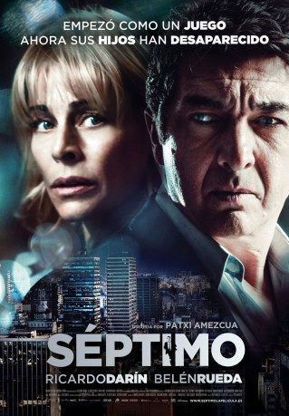

#7392 7th Floor - Jede Sekunde zählt
 
 IMDB-Wertung: 5.8 / 10
IMDB-Wertung: 5.8 / 10  Metascore: 0
Metascore: 0 
Secrets about Mammy Sebastián is a successful lawyer in Buenos Aires and is in the middle of an important case. He has divorced from Delia and they have two children, Luca and Luna. Delia wants to move to Spain to live with her father and wants full custody of the children, but Sebastián is reluctant. Sebastián goes to Delia's apartment on the seventh floor of an old building to take Luca and Luna to school and Delia leaves the place. The siblings ask to go down playing on the stairs while Sebastián takes the elevator. When he arrives on the lobby, he realizes that the children have vanished. Sebastián needs to be in court for an important case but he seeks them out with the janitor and his neighbor Rosales, who is a police detective. He calls Delia that returns to the building and suspects of everyone until a woman calls him asking for a one hundred thousand-dollar ransom in two hours. How can the desperate Sebastián raise this amount in a short time and who might have kidnapped his ...
Jahr: 2013
Dauer: 87 Minuten
FSK: 12
Land: Spanien Studio: Ascot Elite Home EntertainmentTonspuren:
Untertitel: Deutsch,
Auflösung: 720p (1280x544) Größe: 2078 MB
Genre: Thriller, Krimi, Mystery
Regisseur: Patxi Amezcua
Drehbuch: Patxi Amezcua
Soundtrack:
Darsteller:
 Ricardo Darín als Sebastián
Ricardo Darín als Sebastián- Belén Rueda als Delia
- Abel Dolz Doval als Luca
- Charo Dolz Doval als Luna
- Luis Ziembrowski als Miguel
- Osvaldo Santoro als Rosales
- Guillermo Arengo als Rubio
- Jorge D'Elía als Goldstein
- Carolina Barbosa als Secretaria Goldstein
- Pedro Angel Di Salvia als Oso
- Patricia Gilmour als Señora Maria
- Gaby Ferrero als Secuestradora
- Dora Fajn als Anciana
- Gabriel Araoz als Taxista
- Elsa Barrera als Mucama
- Gervasio Usaj als Policia Entrada
- Angeles Olgiati als Vecina
- Dalila Romero als Chica Pareja
- Héctor Sinder als Hombre 60
- Javier López Barreira als Chico Pareja
- Blanca Formáriz als Azafata Stand AirEuropa
- Ana Clara Bergamo als Azafata Check-in AirEuropa
- Alumine Cabrera als Mucama Secuestradora
- Claudio Rojas als Vigilante Ezeiza
- Marinha Villalobos als Mucama Ascensor
- Juan Andrés Casella Kem als Niño Mucama
- Maria Lucia Casella Kem als Niña Mucama
- Andrea Carballo als Natalia
- Damian Merwicer als Doble Sebastián
- Juliana Muras als Gabriela
- María Silvina Lamorte als Locutora Radio
- Nicolas Plager als Locutor Radio
- Mucio Manchini als Hernández
- Horacio Savanz als Chico Bicicleta
- Florencia Limonoff als Voz Portero Eléctricio
Datei: X:\2013(A-F)\7th Floor - Jede Sekunde zählt (2013, FSK12, 1280x544).mkv seit 08.11.2017
Festplatte: HD 2012(N-Z)-2013(A-H)
 Es gibt insgesamt 127 Filme in der Gruppe '2013(A-F)'
Es gibt insgesamt 127 Filme in der Gruppe '2013(A-F)'